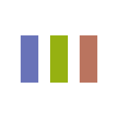

字符替换
拉丁字母或符号：
Onerio 式哈拉伯：
Tri 式哈拉伯：
拉丁字母 →
哈拉伯
符号
Onerio 式哈拉伯
符号 → 拉丁字母
Tri 式哈拉伯
符号 → 拉丁字母
复制拉丁字母和符号
复制 Onerio 式
哈拉伯
符号
复制 Tri 式
哈拉伯
符号
清空
回到主页
返回
拉丁字母或符号
Onerio 式哈拉伯符号
Tri 式哈拉伯符号
h
ح
ح
m
م
م
d
د
د
*
خ
چ
b
ب
ب
g
گ
ق
n
ن
ن
r
ر
ر
s
س
س
a
ا
ا
u, w
و
و
i, y
ي
ي
o
او
وٰ
e
اي
يٰ
ay
لي
يٰ
aw
لو
وٰ
回到主页
返回页顶
返回